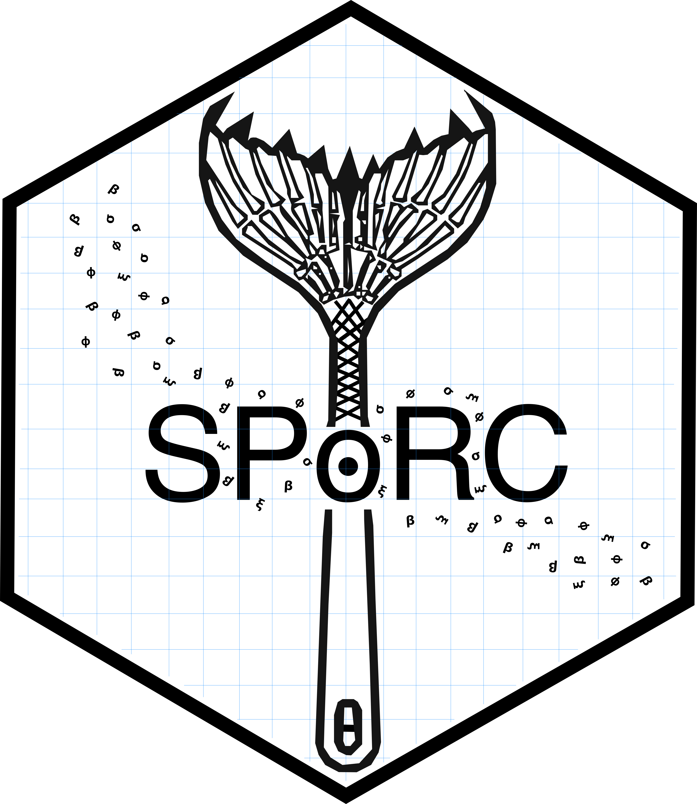

SPoRC: Stochastic Population Model Over Regional Components 
Overview
SPoRC is a flexible modeling framework for spatially structured population dynamics. It accounts for stochasticity in vital rates and movement among geographically defined components. The framework supports:
- Integration of multiple data sources
- Regional structuring
- Age- and sex-specific processes
Thus, SPoRC is suitable for both single-region and spatial stock assessment applications.
Installation
SPoRC is implemented in RTMB and optionally relies on additional packages for plotting and diagnostics.
Prerequisites
Ensure the following packages are installed:
install.packages("devtools") # Development tools
install.packages("TMB") # Template Model Builder
install.packages("RTMB") # R interface to TMB
TMB:::install.contrib("https://github.com/vtrijoulet/OSA_multivariate_dists/archive/main.zip") # Optional: multivariate OSA distributions
remotes::install_github("fishfollower/compResidual/compResidual") # Optional OSA residualsInstalling SPoRC
pak::pak("chengmatt/SPoRC")Publications
- Cheng, M.LH., Goethel, D.R., Cunningham, C.J., Hulson, P.F., Ianelli, J.N., Omori, K.L., 2026. The SPoRC Stock Assessment Package: A Generalized Next‐Generation Platform to Assess Spatial, Age and Sex‐Structured Populations. Fish and Fisheries faf.70082. https://doi.org/10.1111/faf.70082
- Cheng, M.L.H., Thorson, J.T., Goethel, D.R., Cunningham, C.J., 2026. Parsimonious estimation of environment- and demography-dependent movement in spatially stratified stock assessment models. ICES Journal of Marine Science 83, fsag147. https://doi.org/10.1093/icesjms/fsag147
- Cheng, M.L.H., Miller, T.J., Goethel, D.R., Cunningham, C.J., 2026. Ensuring consistency in spatially-stratified stock assessment models: An analytical solution for equilibrium population structure with connectivity for age-and size-structured models. Fisheries Research 300, 107800. https://doi.org/10.1016/j.fishres.2026.107800
Code Examples
- Alaska Sablefish Spatial Closed Loop Simulations: https://github.com/chengmatt/sablefish_cie_sims_2026
- Alaska Sablefish 2026 CIE Review: https://github.com/dgoethel-noaa/2026_Sablefish_CIE
- Alaska Sabelfish 2025 Stock Assessment: https://github.com/dgoethel-noaa/2025_Sablefish_SAFE
- Continuous Time Markov Chain Movement: https://github.com/chengmatt/ctmc_movement
- Northern Southeast Inside Waters Sablefish MSE: https://github.com/chengmatt/nsei_sablefish_mse
Disclaimer
This repository is a scientific product and is not official communication of the National Oceanic and Atmospheric Administration, or the United States Department of Commerce. All NOAA GitHub project code is provided on an ‘as is’ basis and the user assumes responsibility for its use. Any claims against the Department of Commerce or Department of Commerce bureaus stemming from the use of this GitHub project will be governed by all applicable Federal law. Any reference to specific commercial products, processes, or services by service mark, trademark, manufacturer, or otherwise, does not constitute or imply their endorsement, recommendation or favoring by the Department of Commerce. The Department of Commerce seal and logo, or the seal and logo of a DOC bureau, shall not be used in any manner to imply endorsement of any commercial product or activity by DOC or the United States Government.